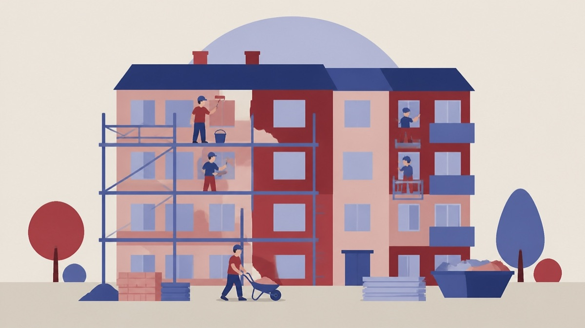

På dagsordenen 1. december, Plan- og Byudviklingsudvalget, Egedal
Budget 2027 for Boligselskabet Sandbjerghuses afdeling 1 og afdeling 2 - beslutning

Kort fortalt
- Hvem
- Plan- og Byudviklingsudvalget, Egedal Kommune
- Hvornår
- Tirsdag 1. december 2026
- Status
- På dagsordenen. Sagen behandles på mødet.
Er noget forkert her? Skriv til os
Hvad kan du gøre?
- Skriv til politikerne
- Udvalgets møder er lukkede, men du kan skrive til medlemmerne før mødet tirsdag 1. december 2026. Du finder dem på egedalkommune.dk.
Læs hele sagen Kommunens egen tekst
Indstilling
Administrationen indstiller, at:
1. Boligselskabet Sandbjerghuses budgetforslag 2027 for afdeling 1, med en
huslejestigning på 15,25% godkendes.
2. Boligselskabet Sandbjerghuses budgetforslag 2027 for afdeling 2, med en
huslejestigning på 13,92% godkendes.
Sagsfremstilling
I almene boliger fastsættes huslejen via budgettet for den enkelte almenboligafdeling.
Budgetforslaget udarbejdes af boligorganisationen (ejeren) og forelægges til godkendelse på et
afdelingsmøde (lejerne). Hvis ikke der kan opnås enighed om budgetforslaget, skal
uenigheden forelægges til endelig afgørelse i Byrådet.
Boligselskabet Sandbjerghuses forelagde den 9. september 2026, på et fælles afdelingsmøde
for begge afdelinger, budgetforslagene for 2027. Forslagene blev begge nedstemt på grund af
huslejestigningen. Budgetforslagene og referatet fra fællesmødet er vedlagt som bilag.
Afdeling 1 består af 52 familieboliger og 7 ungdomsboliger og har en afdelingsbestyrelse.
Afdeling 2 består af 3 familieboliger, hvilket er huse placeret forskellige steder i Ganløse og
Stenløse uden en afdelingsbestyrelse.
Afdelingsbestyrelsen i afdeling 1 har været særligt aktiv i udarbejdelsen af budgettet og har
godkendt den foreslåede huslejestigning. Huslejestigningen skyldes hovedsageligt øgede
henlæggelser til planlagt og periodisk vedligeholdelse. Dette skal sikre, at afdelingen kan
finansiere kommende vedligeholdelsesarbejder, herunder den forestående udskiftning af
tagene med asbestholdige materialer, som er påbudt igangsat af kommunen. Byrådet traf
beslutning om udarbejdelse af et påbud den 27. august 2025, hvorefter påbuddet var i høring
hos boligselskabet og endeligt fremsendt den 30. oktober 2025 med en frist på 2 år.
For afdeling 2 skyldes huslejestigningen ligeledes primært øgede henlæggelser til planlagt
vedligeholdelse. Formålet er at sikre finansiering af kommende vedligeholdelsesarbejder samt
en fortsat økonomisk balance i afdelingen.
Administrationen vurderer, ligesom boligorganisationen og afdelingsbestyrelsen, at det er
nødvendigt at øge afdelingernes opsparing til planlagt vedligeholdelse for at imødekomme
kommende vedligeholdelsesarbejder, sikre økonomisk balance og undgå fremtidige
underskud.
Administrationen anser huslejestigningerne på henholdsvis 15,25% og 13,92% for at være i
den høje ende. Men da Egedal Kommune gennem en årrække har opfordret til at styrke
afdelingernes henlæggelser og økonomiske robusthed, vurderes stigningerne dog at være
nødvendige for at sikre en økonomisk bæredygtig drift og tilstrækkelige midler til fremtidige
vedligeholdelsesarbejder.
Budgetforslaget vil medføre huslejestigninger på 197, 91 kr. pr. m 2 i afdeling 1:
Lejlighedsstørrelse
Husleje før
Husleje efter
Stigning
Husleje A. 36,6 m 2 (1 rum)
Husleje B. 66,3 m 2 (2 rum)
Husleje C. 78 m2 (3 rum)
Husleje D. 96,4 m2 (4 rum)
(Beregnet ud fra gennemsnitlig årlig leje pr. m².)
Budgetforslaget vil medføre huslejestigninger på 182,49 kr. pr. m 2 i afdeling 2:
Lejlighedsstørrelse
Husleje før
Husleje efter
Stigning
Husleje A. 71 m2 (2 rum)
Husleje B. 96 m2 (3 rum)
Husleje C. 103 m2 (4 rum)
(Beregnet ud fra gennemsnitlig årlig leje pr. m².)
Byrådet har, som tilsynsmyndighed, pligt til at gribe ind, hvis økonomien i en almennyttig
boligafdeling ikke lever op til lovens krav. Den huslejestigning, der fremgår af boligselskabets
budgetforslag, vil efter administrationens vurdering balancere afdelingens økonomi, så den
lever op til lovens krav.
På den baggrund skal administrationen anbefale, at Boligselskabet Sandbjerghuses
budgetforslag for afdeling 1 og 2 godkendes.
Konsekvenser for budgettet
Sagen har ingen bevillingsmæssige konsekvenser.
Borgerdialog
Beboerne i afdeling 1 og 2 har behandlet budgetforslag 2027 den 9. september 2026, hvor
begge budgetter blev afvist.
Kilde: Egedal Kommune, Plan- og Byudviklingsudvalget, dagsorden fra mødet tirsdag 1. december 2026, punkt 4. Læs den originale sag hos kommunen.